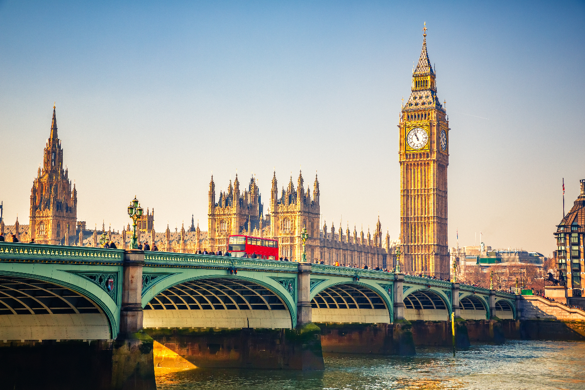

빅벤
빅 벤은 런던의 대표적인 상징물로 런던 웨스트민스터 의회의사당 동쪽 끝에 있는 종탑 시계이다.
그림소프 남작 에드먼드 베켓이 설게한 이 시게는 정확하기로 유명하며 무게나 13t이나 나가는 종으로도 유명하다.
빅 벤이라는 이름은 1859년 이 시계를 설치할때 공사 위임자 벤저민 홈 경의 이름을 딴 것으로, 원래는 종의 이름이었으나 지금은 시계를 가리키는 말이 되었다.
런던 여행에서 빠질 수 없는 코스이나 아쉽게도 지금은 종소리를 들을 순 없다.
160여년간 운영되어 왔던 빅 벤이 노후화되면서 여러 문제가 생김에 따라, 2017년부터 2021년까지 약 4년동안 보수 공사가 진행될 에정이다.
한화 약480억원의 예산을 투입해 지붕의 부식을 막고 석조 구조물의 누수도 봉쇄하며 내부의 엘리베이터를 설치하는 등의 작업이 이뤄진다.
이때 4면에 부착된 시게도 임시 분해를 걸쳐 보수 작업이 진행이 되는 등 대공사가 이루어져 2017년 8월 21일 정오를 마지막으로 빅 벤은 종을 치지 않게 되었다.